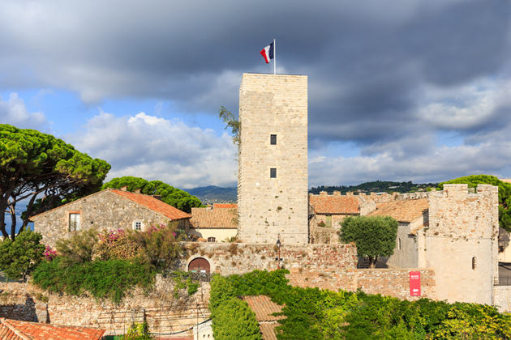

Le Musée des Explorations du Monde

Situé sur les hauteurs du quartier historique de Cannes, le musée des explorations du monde, anciennement musée de la Castre, vous propose un voyage à travers l'art primitif, l'orientalisme en passant par les antiquités. Vous y découvrirez également des expositions temporaires…
Le baron Tinco Martinus Lycklama à Nijeholt (c'est son nom complet), d'origine néerlandaise, vécut à Cannes à la fin du XIXe siècle. Amateur éclairé pour les antiquités, l’orientalisme, l’ethnographie et l’art primitif, il légua en 1877, ses collections à la Ville de Cannes.
En 1919, la commune de Cannes acquit l’ensemble des bâtiments sur les hauteurs du Suquet afin d’y loger son musée, encore installé à l'époque à l’hôtel de ville. Cet édifice conventuel est construit sur un plan carré, comme celui d’un château médiéval avec donjon, et il intègre dans son enceinte défensive un